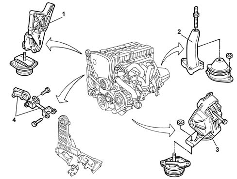

Composition
- Path
- Descriptions > 10 ENGINE > 1008 POWER UNIT SUPPORTS > Composition
- Kind
- system description
- Applies to
- engines: 2.4 20V; all production periods
- Interactive page
- https://sloeber94.github.io/elrnDB-lThss/en/#/496302
Applies to: engines: 2.4 20V; all production periods
Structure
The power unit support is the "suspended" type.
The unit is secured to the bodyshell by means of 4 supports with flexible mountings:
- one timing side aluminium alloy;
- one rear steel which is fastened to the suspension crossmember;
- one gearbox side aluminium alloy;
- one for restricting jolts to the engine connected at the top to the bodyshell by means of a reaction rod.

- 1, Rigid rear support
- 2, Gearbox side rigid support
- 3, Timing side rigid support
- 4, Reaction rod